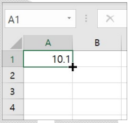
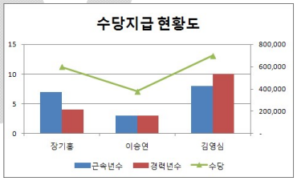
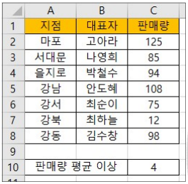
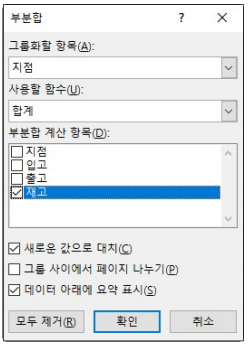
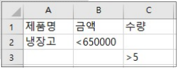
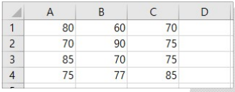
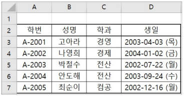

2026년 컴퓨터활용능력 2급 기출문제
제1과목 컴퓨터 일반
1. 다음 중 컴퓨터의 롬(ROM)에 기록되어 하드웨어를 제어하며, 하드웨어의 성능 향상을 위해 업그레이드 할 수 있는 마이크로프로그램의 집합을 의미하는 것은?
[해설]
- 문제에 제시된 내용은 펌웨어(Firmware)에 대한 설명입니다.
- 프리웨어(Freeware): 무료로 사용 또는 배포가 가능한 소프트웨어
- 셰어웨어(Shareware): 기능 혹은 사용 기간에 제한을 두어 배포하는 소프트웨어
- 미들웨어(Middle Ware): 운영체제와 해당 운영체제에 의해 실행되는 응용 프로그램 사이에서 운영체제가 제공하는 서비스 이외에 추가적인 서비스를 제공하는 소프트웨어
2. 다음 중 파일 및 폴더에 대한 설명으로 옳은 것은?
[해설]
- 하나의 폴더 내에는 동일한 이름의 파일이나 폴더가 존재할 수 없습니다.
- 하위 폴더가 있는 폴더도 삭제할 수 있습니다.
- 파일이나 폴더의 이름에 공백을 사용할 수 있습니다.
3. 다음은 악성코드에 대한 설명이다. 옳지 않은 것은?
[해설]
- 웜(Worm)은 자신의 명령어를 다른 프로그램 파일에 복사하는 것이 아니라, 스스로 자신을 복제하여 시스템의 부하를 높이는 독립형 악성코드입니다.
4. 다음 설명에 해당하는 데이터 통신망을 무엇이라 하는가?
• 통신사업자의 대용량 회선을 임대하여 다수의 저속 회선으로 분할한다.
• 전화 교환, 패킷 교환, 전용 회선의 각 서비스망을 구성한다.
• 회선의 재판매를 목적으로 하는 회선 대여업이라 할 수 있다.
• 전화 교환, 패킷 교환, 전용 회선의 각 서비스망을 구성한다.
• 회선의 재판매를 목적으로 하는 회선 대여업이라 할 수 있다.
[해설]
- 문제의 지문에 제시된 내용은 부가가치 통신망(VAN)에 대한 설명입니다.
5. 다음 중 전자우편(E-mail)에 대한 설명으로 옳지 않은 것은?
[해설]
- POP3는 메일 서버에 도착한 E-mail을 사용자 컴퓨터로 가져올 수 있도록 메일 서버에서 제공하는 프로토콜입니다.
- 멀티미디어 파일의 내용을 확인하고 실행시켜 주는 프로토콜은 MIME입니다.
6. 다음 중 JPEG 표준에 대한 설명으로 옳지 않은 것은?
[해설]
- JPEG는 문자, 선, 세밀한 격자 등 고주파 성분이 많은 이미지의 변환에서는 GIF나 PNG에 비해 품질이 나쁩니다.
7. 다음 중 인터넷 주소 체계인 IPv6에 대한 설명으로 옳지 않은 것은?
[해설]
- IPv6은 IPv4와의 호환성 및 주소의 확장성, 융통성, 연동성이 뛰어납니다.
8. 다음 중 데이터 보안 침해 형태 중 하나인 변조에 대한 설명으로 옳은 것은?
[해설]
- 변조에 대한 설명으로 옳은 것은 '전송된 데이터를 다른 내용으로 바꾸는 것'입니다.
- 1번은 가로막기, 2번은 가로채기, 4번은 위조에 대한 설명입니다.
9. 다음 중 컴퓨터의 연산 속도 단위로 가장 빠른 것은?
[해설]
- 연산 속도를 빠른 순서대로 나열하면 1fs(펨토초) > 1ps(피코초) > 1ns(나노초) > 1µs(마이크로초) > 1ms(밀리초) 순입니다.
10. 다음 중 멀티미디어에 대한 설명으로 옳지 않은 것은?
[해설]
- 멀티미디어용 소프트웨어는 문자 지향의 도스용보다는 다양한 그래픽, 사운드, 동영상 등을 손쉽게 다룰 수 있는 윈도우용 소프트웨어를 많이 사용합니다.
11. 컴퓨터 소프트웨어 배포와 관련하여 특정 기능 또는 기간을 제한하여 공개하고, 사용한 후에 사용자의 구매를 유도하는 소프트웨어는?
[해설]
- 문제에 제시된 내용은 셰어웨어(Shareware)에 대한 설명입니다.
- 알파(Alpha) 버전: 베타테스트를 하기 전, 제작 회사 내에서 테스트할 목적으로 제작하는 프로그램
- 패치(Patch) 버전: 이미 제작하여 배포된 프로그램의 오류 수정이나 성능 향상을 위해 프로그램의 일부 파일을 변경해 주는 프로그램
- 프리웨어(Freeware): 무료로 사용 또는 배포가 가능한 소프트웨어
12. 다음의 특성들을 갖는 분산 시스템 모델은 어느 것인가?
• 정보를 제공하는 컴퓨터와 정보를 제공받는 컴퓨터로 구성되어 있다.
• 정보를 제공받는 컴퓨터와 제공하는 컴퓨터 모두 처리 능력을 가지고 있다.
• 정보를 제공받는 컴퓨터와 제공하는 컴퓨터 모두 처리 능력을 가지고 있다.
[해설]
- 정보를 제공하는 컴퓨터(Server)와 정보를 제공받는 컴퓨터(Client)로 구성되어 있는 시스템은 클라이언트/서버 시스템입니다.
13. 다음 중 한글 Windows 10의 [키보드 속성] 대화상자에서 설정할 수 있는 내용으로 옳지 않은 것은?
[해설]
- 마우스 포인터의 자국 표시 여부는 [마우스 속성] 대화상자의 [포인터 옵션] 탭에서 설정할 수 있습니다.
14. 다음 중 컴퓨터 하드디스크의 연결 방식인 SATA(Serial ATA)에 관한 설명으로 옳지 않은 것은?
[해설]
- SATA는 직렬(Serial) 인터페이스 방식입니다.
15. 다음 중 프로그래밍 언어가 아닌 것은?
[해설]
- UNIX는 운영체제(OS)의 한 종류입니다.
- SPSS와 LISP, COBOL 등은 프로그래밍 언어에 해당합니다.
16. 다음 중 한글 Windows 10의 [설정] → [시스템] → [소리]에서 수행할 수 있는 작업이 아닌 것은?
[해설]
- 내레이터는 [설정] → [접근성] → [내레이터]에서 설정할 수 있습니다.
17. 다음 중 한글 Windows 10의 바탕 화면에 있는 바로 가기 아이콘을 선택한 후에 [Alt]+[Enter]를 눌렀을 때 나타나는 현상으로 옳은 것은?
[해설]
- 바탕 화면의 바로 가기 아이콘을 선택한 후 [Alt]+[Enter]를 누르면 속성 대화상자가 표시됩니다.
18. 다음 중 한글 Windows 10에서 작업 표시줄의 바로 가기 메뉴에서 설정할 수 있는 항목으로 옳지 않은 것은?
[해설]
- 아이콘 자동 정렬은 바탕 화면 바로 가기 메뉴의 [보기] 하위 메뉴에서 설정할 수 있습니다.
19. 다음 중 파일이나 폴더를 복사하거나 이동하는 방법으로 옳지 않은 것은?
[해설]
- 폴더를 마우스로 선택한 후 [Alt]를 누른 채 다른 폴더로 끌어서 놓으면 바로 가기 아이콘이 생성됩니다.
20. 해커를 유인하기 위해 의도적으로 취약한 서버를 만들어 이를 모니터링하는 시스템으로 공격자의 공격 경로와 공격 수법을 알아내기 위한 목적으로 사용하는 것은?
[해설]
- 문제의 설명은 허니팟(Honeypot)에 해당합니다.
- VPN: 공중망을 사설망처럼 사용하는 가상 사설망
- IDS: 시스템 비정상 사용/오용을 실시간 탐지하는 침입 탐지 시스템
- 방화벽: 외부의 불법 침입으로부터 내부 네트워크 자산을 보호하는 시스템
제2과목 스프레드시트 일반
21. 다음 중 아래 워크시트의 [A1] 셀에서 10.1 입력한 후 [Ctrl]을 누르고 자동 채우기 핸들을 아래로 드래그한 경우 [A4] 셀에 입력되는 값은?

[해설]
- [Ctrl]을 누른 채 숫자가 포함된 셀의 채우기 핸들을 드래그하면 정수 부분이 1씩 증가합니다.
- A1: 10.1 → A2: 11.1 → A3: 12.1 → A4: 13.1
22. 다음 차트에 대한 설명으로 옳지 않은 것은?

[해설]
- 제시된 차트에는 데이터 레이블 값이 표시되어 있지 않습니다. 해설 그림과 같이 값들이 나타나야 데이터 레이블이 설정된 상태입니다.
23. 다음 중 워크시트의 인쇄 영역 설정에 대한 설명으로 옳지 않은 것은?
[해설]
- 인쇄 영역 설정을 해제하면 전체 통합 문서가 아닌 해당 워크시트의 인쇄 영역만 해제됩니다.
24. 다음 중 매크로의 실행 방법에 관한 설명으로 옳지 않은 것은?
[해설]
- 일반 셀에서 마우스 오른쪽 버튼을 눌러 매크로를 직접 실행하거나 연결하는 메뉴는 제공되지 않습니다.
25. 다음 중 페이지 나누기에 대한 설명으로 옳지 않은 것은?
[해설]
- 행 높이와 열 너비를 변경하면 페이지 내 출력 용량이 달라지므로 자동 페이지 나누기 구분선의 위치가 자동으로 조정됩니다.
26. 다음 중 [C10] 셀에 판매량이 판매량 평균 이상인 지점의 개수를 구하는 수식으로 올바른 것은?

[해설]
- COUNTIF 함수 조건식에서 함수 또는 셀 참조를 연산자와 결합할 때는
">="&AVERAGE($C$2:$C$8)형식으로 앰퍼샌드(&) 연산자를 사용해야 합니다.
27. 다음 중 창 나누기에 대한 설명으로 옳지 않은 것은?
[해설]
- 창 나누기의 구분선은 마우스로 클릭하여 드래그함으로 위치를 자유롭게 이동할 수 있습니다.
28. 다음 중 데이터 입력에 대한 설명으로 옳지 않은 것은?
[해설]
- 여러 셀을 선택하고 동일한 데이터를 한 번에 입력하기 위해서는 [Ctrl]+[Enter]를 눌러야 합니다.
29. 다음 중 부분합에 대한 설명으로 옳지 않은 것은?

[해설]
- 부분합이 정상 동작하려면 사용자가 부분합을 수행하기 전에 반드시 그룹화할 항목을 기준으로 데이터 정렬(오름차순/내림차순)을 먼저 진행해야 하며, 자동으로 정렬되지 않습니다.
30. 다음 중 정렬에 대한 설명으로 옳은 것은?
[해설]
- 정렬 기준은 셀 값뿐만 아니라 셀 색, 글꼴 색, 조건부 서식 아이콘으로도 정렬할 수 있습니다.
- 1번: 최대 64개의 열을 기준으로 정렬할 수 있습니다.
- 3번: 병합된 셀이 동일한 크기가 아니면 정렬할 수 없습니다.
- 4번: 원칙적으로 숨겨진 행이나 열은 정렬에 포함되지 않습니다.
31. 고급 필터에서 다음과 같은 조건을 적용하였을 때 선택되는 데이터로 올바른 것은?

[해설]
- 같은 행에 위치한 조건은 AND 조건이고, 다른 행에 위치한 조건은 OR 조건입니다.
- 2행: (제품명="냉장고" AND 금액<650000)
- 3행: OR (수량>5, 즉 6 이상)
32. 다음 중 워크시트 작업 및 관리에 대한 설명으로 옳지 않은 것은?
[해설]
- 새 워크시트를 바로 삽입하는 단축키는 [Shift]+[F11]이며, 현재 시트 앞에 새로 삽입됩니다. ([Shift]+[F10]은 마우스 우클릭 메뉴/바로 가기 메뉴 열기 단축키입니다.)
33. 다음 중 차트에 대한 설명으로 옳지 않은 것은?
[해설]
- 데이터 범위 선택 후 [Alt]+[F1]을 누르면 현재 워크시트에 포함되는 엠베디드 차트(임베디드 차트)가 작성되며, 별도의 차트 시트로 독립 생성하려면 [F11]을 눌러야 합니다.
34. 다음 중 데이터 통합에 관한 설명으로 옳지 않은 것은?
[해설]
- '원본 데이터에 연결' 옵션은 통합 대상 원본 데이터 영역과 결과 데이터 영역이 서로 다른 워크시트에 존재할 때 사용할 수 있습니다. 동일한 워크시트 내에 같이 존재하는 경우에는 설정할 수 없습니다.
35. [D1] 셀에 입력된 수식 '=A$1+$B1'을 복사하여 [D3] 셀에 붙여넣을 경우 결과로 옳은 것은?

[해설]
- [D1] 셀 수식:
=A$1+$B1 - [D3] 셀로 복사 시 행 위치가 2행 이동하므로 상대/혼합 참조 변화에 의해
=A$1+$B3으로 변경됩니다. - A1 셀 값(80) + B3 셀 값(70) = 150이 됩니다.
36. 다음 중 조건부 서식에 대한 설명으로 옳지 않은 것은?
[해설]
- 여러 조건 규칙을 모두 만족할 경우 충돌하지 않는 서식 속성은 모두 중첩되어 적용되고, 동일 서식 항목에서만 우선순위가 높은 규칙이 적용됩니다.
37. 아래 워크시트에서 '생일' 필드와 같이 표시되도록 하는 사용자 지정 서식으로 올바른 것은?

[해설]
- 한글 요일을 한 글자(예: 목)로 표현하는 표시 형식 코드는
aaa입니다. - aaaa: 목요일 / ddd: Thu / dddd: Thursday
38. 다음 중 [페이지 설정] 대화상자에서 워크시트에 포함된 노트의 인쇄 여부 및 인쇄 위치를 지정하기 위해 선택해야 할 탭은?
[해설]
- 메모 및 노트의 인쇄 여부, 인쇄 위치 지정은 [페이지 설정] 대화상자의 [시트] 탭에서 옵션을 통해 설정합니다.
39. "2020년 매출 실적" 파일의 "상품 재고" 시트 [B2] 셀을 참조하려고 한다. 다음 중 옳은 것은?
[해설]
- 다른 통합 문서를 외부 참조할 때는 파일명을 대괄호([ ])로 묶고, 시트명이나 파일명에 공백이 포함되면 경로 전체를 작은따옴표(' ')로 감쌉니다. 시트명과 셀 주소 구분을 위해 느낌표(!)를 붙입니다.
40. 다음 중 날짜 및 시간 데이터에 관한 설명으로 옳지 않은 것은?
[해설]
- 날짜 및 시간 데이터는 수치 데이터의 일종으로 기본적으로 오른쪽 맞춤으로 표시됩니다.